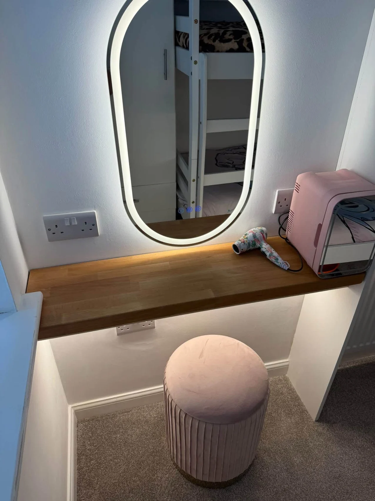

BENNETT ALL TRADES · WIDNES
Handyman & maintenance.
Big or small. Let’s get it sorted.
BENNETT ALL TRADES
Start with your project.
Pictures and TV hanging, shelving, flat-pack assembly, door and lock repairs, decorating touch-ups and general maintenance. You can also enquire about light fittings, small electrical jobs, fencing and gate adjustments. Tell us which jobs need attention and send a few photographs so we can discuss the work and agree a price per job.
Send a few photographs, approximate dimensions and your postcode to start the conversation.
Discuss your project →OUR PROJECTS
Handyman & maintenance projects.
Select a photograph for a larger view.
PROJECT ENQUIRY
Let’s talk about your next job.
Tell us what you have in mind. This form opens a WhatsApp draft with all your details, ready for you to review, add photos and send.